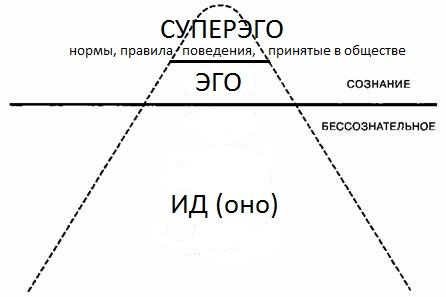

Вопросы:
- Особенности психологии
- Основные исторические этапы психологии
1 вопрос
Психология – наука, изучающая внутреннюю психическую жизнь человека.
Объект психологии – человек. Предмет – психические процессы, свойства, явления.
Психика – свойство высокоорганизованной материи (мозга), функцией которой является субъективное отражение объективной реальности.
Связь психологии с другими науками:
- Философия
- Естественно-научные дисциплины
- Социальные науки
2 вопрос
Этапы психологии:
- Психология как наука о душе.
Особенности:
- Предметом психологии является душа.
- Умозрительный характер исследования.
- Все объекты, живые и неживые наделялись душой.
- Всем явлениям, связанным с психической жизнью человека предавался таинственный, загадочный характер.
Вопросы о взаимоотношении души и тела были рассмотрены в рамках двух философских школ:
- Материалисты – Аристотель считал, что душа – основная функция тела. Его трактат «О душе» считается первым психологическим трудом.
- Идеалисты – Платон считал, что душа незрима и вечна, существует независимо от тела; после смерти тела душа отправляется в «мир идей».
- Психология как наука о сознании.
Характеристики этапа:
- Появление научных сообществ, психологических школ, психологических изданий. В 1879 г. Вильгельм Вундт в Вене открыл первую психологическую лабораторию – это символическая точка отсчета существования психологии как самостоятельной науки.
- Развитие контактов с другими научными дисциплинами: появление новых отраслей психологии.
- Разнообразие и конкуренция различных психологических школ и направлений.
Одно из направлений психологии сформировавшееся на данном этапе это психоанализ Зигмунда Фрейда.
Основные идеи теории:
- В психике человека существует три сферы: сознание, предсознание, бессознательная (знание которые никогда не допускаются в сознание, но влияют на жизнь человека).
- Основные формы проявления бессознательного:
- Сновидение
- Ошибочное действие (оговорки, описки, забывания)
- Невротические симптомы
- Основной движущей силой, энергией, которая направляет жизнь человека, является либидо. В противовес ей существует энергия смерти и разрушения - Танатос.
- Структура личности по Фрейду имеет вид «айсберга»:

- Психология как наука о поведении (бихевиоризм).
Начинается данный этап с теории Джона Уотсона.
Основные идеи:
- Психология, являясь экспериментальной наукой, не может заявлять сознание своим предметом, т.к. то, что нельзя объективно наблюдать либо не существует, либо недоступно для изучения.
- Предметом психологии является поведение, которое понималось как реакция на определенный стимул.
В дальнейшем последователи Уотсона смягчили теорию, добавив в нее промежуточные переменные: мотивы, желания самого человека, его стремления.
- Психология как наука о фактах, механизмах, закономерностях психики и сознания человека.